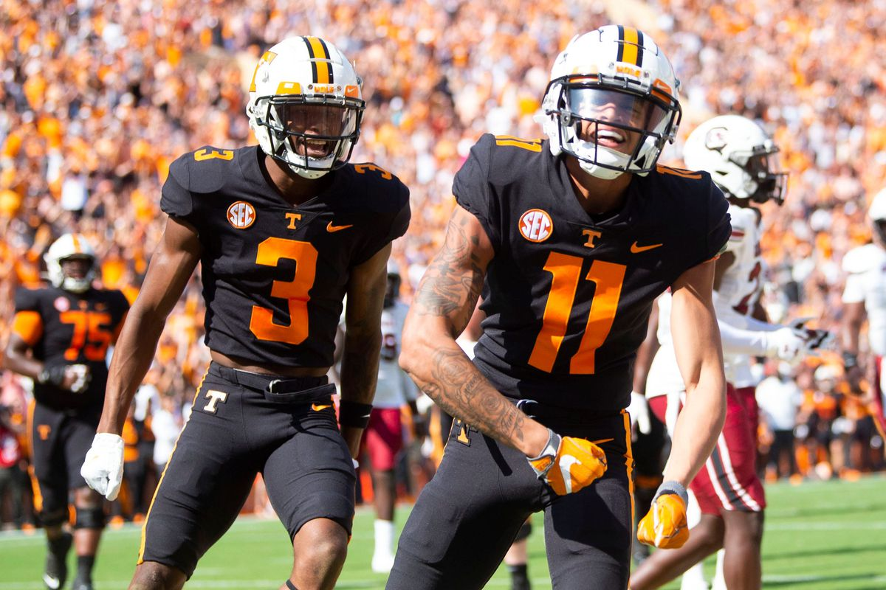

Tennessee Volunteer Football
The Vols have played football for 130 seasons, starting in 1891; their combined record of 854–406–53 ranks them eleventh on the list of all-time win-loss percentage records .671 and by-victories list for college football programs as well as second on the all-time win/loss list of SEC programs 386-241-33 .612.[3][4] Their all-time ranking in bowl appearances is third (52) and sixth in all-time bowl victories (28), most notably four Sugar Bowls, three Cotton Bowls, an Orange Bowl, a Peach Bowl, and a Fiesta Bowl. They have won 16 conference championships and claim six national titles, including two (1951, 1998) from major wire-service: AP Poll and Coaches' Poll in their history.
The Vols play at Neyland Stadium on the university's campus in Knoxville, where Tennessee has an all-time winning record of 464 games, the highest home-field total in college football history for any school in the nation at its current home venue. Additionally, its 102,455 seat capacity makes Neyland the nation's fifth largest and second largest in the Southeastern Conference.
Volunteers Offense
Hendon Hooker In Action